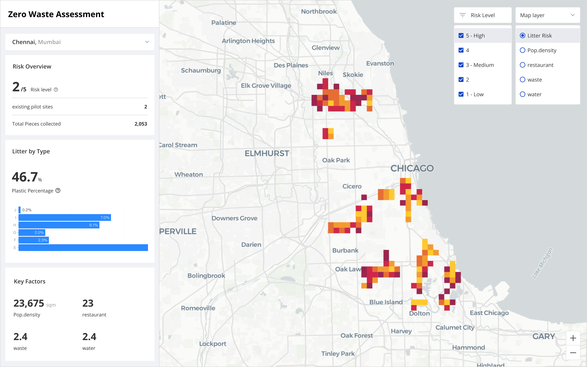

Welcome to the Zero Waste Assessment Dashboard! Here, you'll find insights into a litter accumulation risk site-selection tool for the 12 Resilient Cities Network. Use the dropdown menu to select a city and explore its corresponding data. Navigate through interactive maps to visualize litter data and demographics, and dive deeper into specific metrics. Let's work together towards a cleaner and more sustainable future!
Risk Overview
/5 Risk Levelexisting pilot sites 2
Total pieces collected 2053
Litter by Type
%
Plastic Percentage
Key Factors